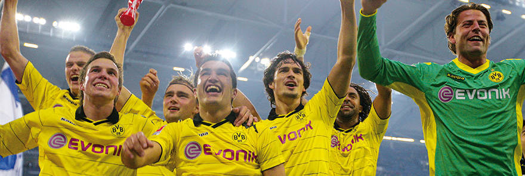
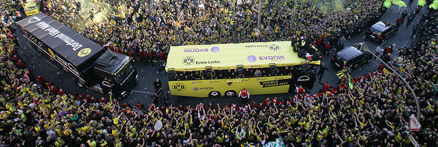

Whilst off the field Hans-Joachim Watzke and his team led the club
to financial stability and wealth clearing some 126 million Euros
worth of debt, on the field things were progressing well, too.
Jürgen Klopp arrived to give the team a new impetus and purpose.
Following the narrow defeat to Bayern in the Cup Final a door was
opened into European competition for the first time since 2003.
Klopp so impressed with his character and his desire to play
’full-throttle‘ football. And boy did his team buy into the
mantra, particularly at home where in 2008/09 the team remained
unbeaten for the first time in almost 20 years. 59 points meant
that UEFA Cup qualification was missed by the smallest of margins.
The new philosophy, to build around young, hungry
players worked from the start. The team played its way into the
hearts of football fans across Europe. That 5th place finish was
followed by a Bundesliga win with the youngest ever side to take
that title, the seventh in the club’s history. On May 14 2011 DFB
president Dr Reinhard Rauball handed Roman Weidenfeller the
championship trophy and a whole region swelled with pride.
Dortmund celebrated that title like no other city before.
12.05.2012
Fans go barmy: Utter bliss in Black n Yellow

The first Double in the club’s history sends the fans into a
frenzy of ecstasy peaking in exhilarating fashion at the Final in
Berlin.
The final whistle saw players and fans alike melt into total joy.
The BVB fans that had taken over the city in the build-up to the
game dominated proceedings in the stadium, too. Their team, their
champions were roared on as if the Signal Iduna Park had been
transplanted to Berlin.
Norbert Dickel’s naming of the
team prompted wave upon wave of tumultuous noise around the
Olympic stadium. And with just three minutes gone, an atmosphere
that few present felt could have got better, just did as Shinji
Kagawa gave BVB the lead to kick-start Black n Yellow
celebrations. The Olympic stadium was rocking.
The
Bayern fans soon realised that only one team was going to be in
control and so while Dortmund cheered, the Bavarian fans wept. The
only time the game was anything like in doubt was a short period
between the 25th and 41st minutes. The stadium held its breath as
Weidenfeller charged out to stop Mario Gomez.
But yes,
it was a penalty, and Robben duly dispatched the ball into the net
with Weidenfeller, unlike in the Bundesliga weeks earlier, beaten
this time.
A brief silence, then the passion, the
noise, the support was back. If there is one thing BVB fans know
how to do, it’s getting behind the team in adversity. With Bayern
hinting at taking control, the Black n Yellow masses refused to
accept that fact and they were rewarded with a second BVB goal.
From then on, the euphoria was frenzied and continuous as people
embraced, wept and laughed celebrating a historic, mad result.
When Franck Ribery made it 2-4 Borussia, both players
and fans alike, scarcely wavered. Mitch Langerak, replacing the
injured Weidenfeller was imperious, Robert Lewandowski’s hat-trick
simply topping off a magical season for the Pole and Mats Hummels
who, having scored a penalty was the first to charge towards the
fans at the final whistle; this was a game that was only ever
going to be won by one team.
For many BVB fans it was
hard to take in. Five goals, and five consecutive wins over
Bayern. Bundesliga and Cup winners, and a team full of records.
All remarkable as was the party that was now starting and went on
and on and on.